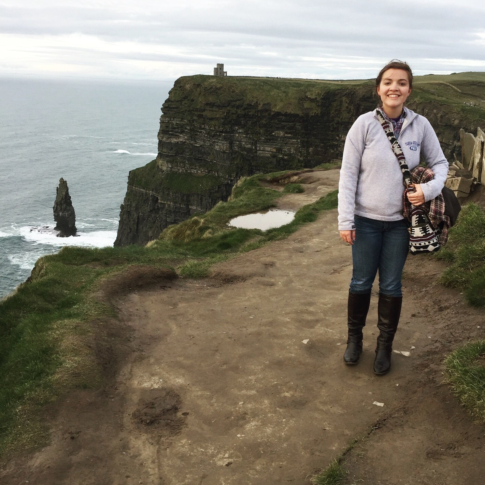

Hi my name is Montana Knight, I am a senior at Florida Gulf Coast University pursuing a degree in Biotechnology with a minor in Chemistry. Following graduation I plan on obtaining a Masters degree in Bioinformatics and then finding a job in the industrial sector. This website serves as my portfolio, here you can find awards, accomplishments, courses taken, and more. Feel free to contact me with any questions!
